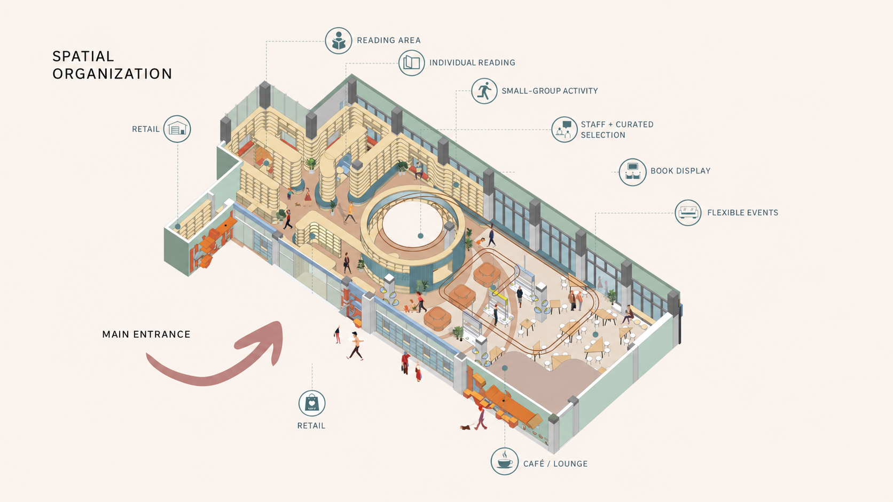
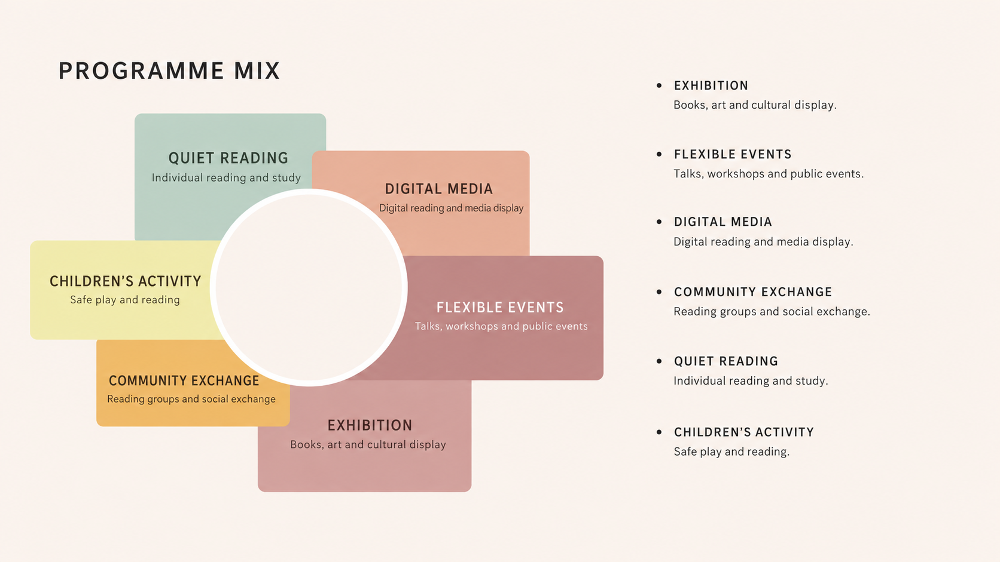
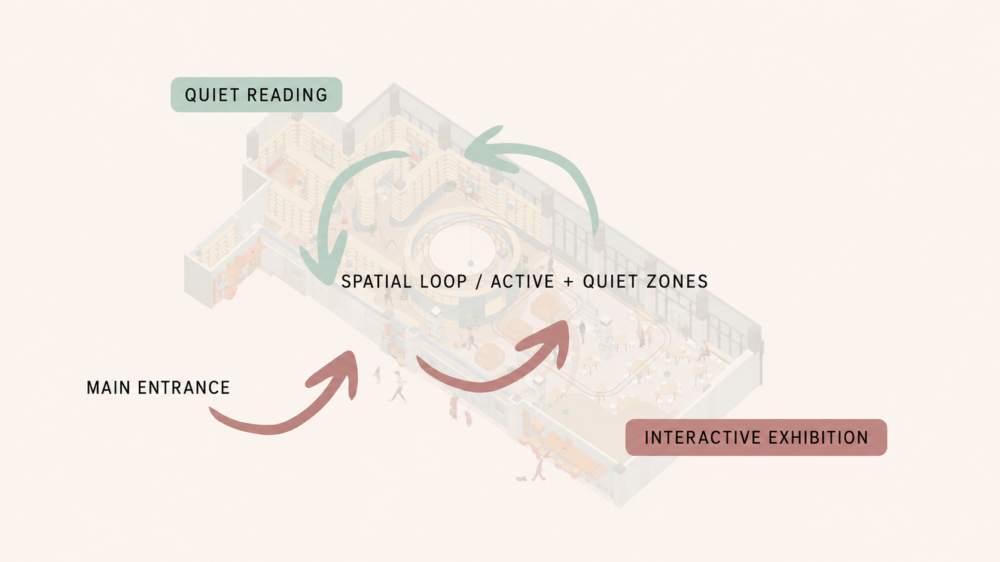
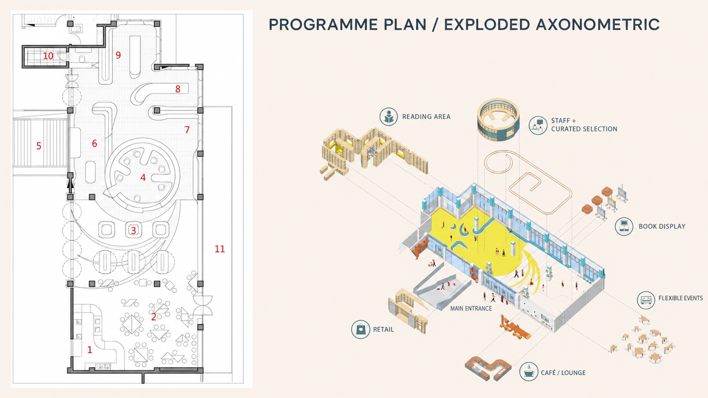
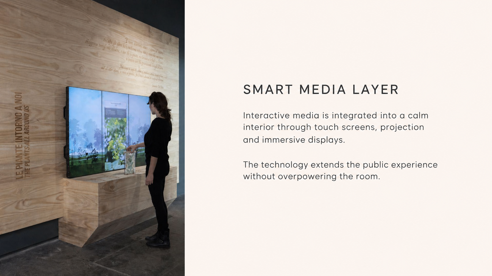

Zhiling / A Smart Urban Living Room
An adaptable public interior for shared cultural life.
A concept proposal for Phoenix Publishing & Media Group, imagining an intelligent cultural space where exhibition, reading, digital media and everyday gathering share one adaptable public interior.
- Role
- Independent designer

02 / Positioning
From publisher to public platform.
Zhiling expands the role of a publishing institution into a shared cultural setting. Books, exhibitions, digital content and public programmes are brought together as an everyday urban experience rather than a single-purpose reading room.

03 / Spatial loop
Active and quiet uses share one continuous interior.
A loop guides visitors from the main entrance through display, reading and event zones. The circular centre acts as both an orienting device and a shared social focus, while quieter reading areas remain legible around it.


04 / Smart media
Technology extends the room without overpowering it.
Interactive displays, touch screens and projection are treated as part of the public interior, extending the publisher's content into a more immersive and participatory experience while keeping the room calm and approachable.
